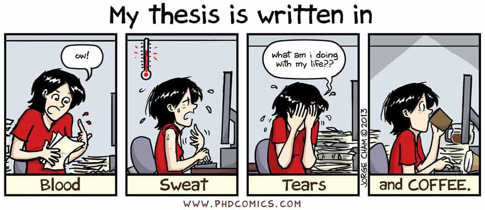

Ned is an intellectual bushranger. He has spent the past ten years in the leftist corridors of Australia’s universities and civil service and he’s had enough.


A PhD is an 80,000 to 100,000 word thesis that makes an “original and significant contribution” to human knowledge. The arts/humanities include disciplines such as literature, classics, history, politics, philosophy, religion, visual arts, performing arts, and gender studies. I recently completed a PhD in a humanities department at an Australian university. Australian academia is a small world so for the sake of my career I won’t give more details that could identify me.
Whether or not to do a PhD is a choice you have to make for yourself. It’s not for me to say that no one should ever do a PhD in humanities. Even I admit that it isn’t a complete waste of time, and if it’s what you really want to do then go for it. These disciplines need some right-wing people to balance the scales.
What I can say is that I personally regret doing a PhD in humanities. If I had to do a PhD again I would definitely choose a STEM (science, technology, engineering, math) field, but I don’t think I would do a PhD in any subject. Life’s too short. Anyway, here are ten reasons not to do a PhD in humanities.
After more than ten years at university my advice to new students is to focus on learning skills rather than content. You will forget most content you learn, and even if you don’t it isn’t that useful. What you need for work and life is skills such as writing, math and coding.
Have you ever noticed that third-year humanities subjects have few or no prerequisite subjects or skills? That is because the only real difference between first-year and third-year humanities subjects is that third year subjects have more pages of weekly readings (that most students won’t read anyway) and longer essays.
You’ll never see a third-year subject in a STEM department with no prerequisites because STEM students learn skills like math and coding that build on previous knowledge so that by the time you are in the later years of your degree, you’re doing things you could not have done in first year. You would hope that all university degrees would work like that, but you’d be wrong.
The lack of skills taught in humanities departments continues into the PhD. Sure, you develop skills in writing, research, critical thinking, and self-motivation but unfortunately those are skills that are both common and difficult to quantify on job applications. For example, even undergraduate students in STEM can write well enough for most desk jobs whereas to me their math and coding looks like an alien language.
Humanities subjects are highly subjective, there is often limited evidence available to researchers, and most arguments cannot really be proven or disproven. Humanities is all about making plausible arguments. The average humanities PhD thesis is a house of cards consisting of plausible but unprovable arguments built upon plausible but unprovable arguments. One of the foundational arguments may well be wrong which invalidates all the rest, but it doesn’t matter because no one will ever be able to prove it.
Humanities PhDs often cover laughably broad topics. It is not uncommon for humanities research to cover multiple countries and/or centuries. The only way to cover such large topics is with shallow analysis, minimal evidence and arguments that are, at best, plausible but unprovable. In my opinion, most humanities writing is better thought of as reality-based fiction.
This one is simple; humanities departments are pumping out PhDs but there are very few jobs in academia, and humanities PhDs are not particularly useful in other fields. In my department, there were around 50 PhD students and 2 post-doc positions. That’s math that even a humanities student can do: 1 job per 25 students.

The average PhD takes over four years of full-time work in addition to the 4+ years of undergraduate and Honours study that precedes it. That is a lot of time, effort, lost wages and lost career progression. Think of all the travel or hobbies you could do with that time and money. In four years, you could even do something useful like a trade, an engineering degree or a hitch in the army.

PhDs are long and stressful ordeals living in poverty with minimal incentives or rewards. No surprise, then that PhD students have much higher rates of mental illness than the population at large.
Humanities departments are full of feminists. These are not your garden variety “women should be equal” feminists. These are the man-haters who interpret everything through the lens of an “oppressive patriarchy”.
Their raging confirmation bias means that as a straight, white man anything you say can and will be twisted and turned against you. You are privileged, subconsciously sexist and potentially violent, whether you like it or not. Most of the men in arts departments are falling over themselves to prove that they are just as feminist and man-hating as the women.
Humanities PhD students are highly incestuous with multiple short and long-term relationships forming within most cohorts. These people are like hamsters crawling all over one another. Cheating is commonplace. Humanities PhD students are mostly women so this may sound like a dream scenario to many men but trust me, it’s a trap! Women love drama. Don’t shit where you eat and don’t put your penis or any other part of your anatomy near crazy.
Arts departments are full of leftists. The research topics chosen by most of these leftists are equal parts boring and irrelevant. You are more likely to see research about the effects of World War II on gay aboriginal women in Australia than you are to see a thesis on the actual battles that decided the course of human history.
Disturbingly, this leftism has taken on some of the forms of a dogmatic religion. One example in Australia is called the “Acknowledgement of Country”. At the beginning of any talk or workshop someone has to get up and say: “I would like to acknowledge that this meeting is being held on the traditional lands of the [appropriate tribal group] indigenous people, we pay respect to elders both past and present and celebrate them as the oldest continuous culture on earth”. All human cultures have common ancestors, so all cultures are equally old. Point this out at your own risk.
Let’s be honest, most people do a PhD primarily for the status of being able to put “Dr” in front of their name. Most also love the idea of becoming an academic psuedo-celebrity within their field and having their name and photograph stamped on the covers of books. Academia is Hollywood for ugly people who like to read.
They don’t actually enjoy their research and yet they are highly competitive over who can publish the most articles in the best journals, give papers at the most conferences, and finish their thesis the quickest. Think of a workplace full of competitive narcissistic feminist women working jobs they hate for terrible pay and knowing that after four years 96% of them will be fired.
This is what they make you read in Hell.
Academic research in humanities is almost universally unread. This is because humanities academics choose boring and irrelevant topics and because publishing is done primarily as a way to get and keep academic jobs rather than because the author has something important or useful to say.
If I sound a little bitter it’s because I am. My PhD was a horrible ordeal and I don’t have much to show for it. But I take full responsibility for my choices—no one had a gun to my head. If I’m honest, humanities academia was the only thing I was good at and earning a PhD was a way for me to patch up my low self-esteem.
On the plus side, I always thought I had the ability to do a PhD and now I don’t have to die wondering. The problem is that I have now looked behind the curtain and realised these disciplines are mostly bullshit. If it’s something you want to do then go for it, but do your research and embark with an appreciation of the pitfalls. Don’t be afraid to quit if you’re miserable. Sometimes quitting takes more courage than continuing.
Read more: How Liberal Arts Hurts Our Economy